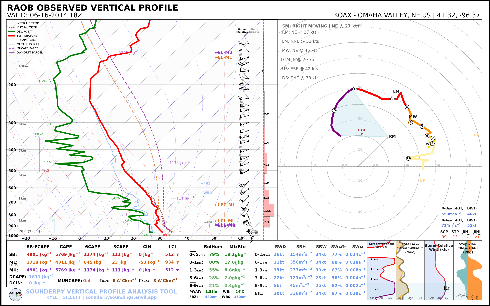
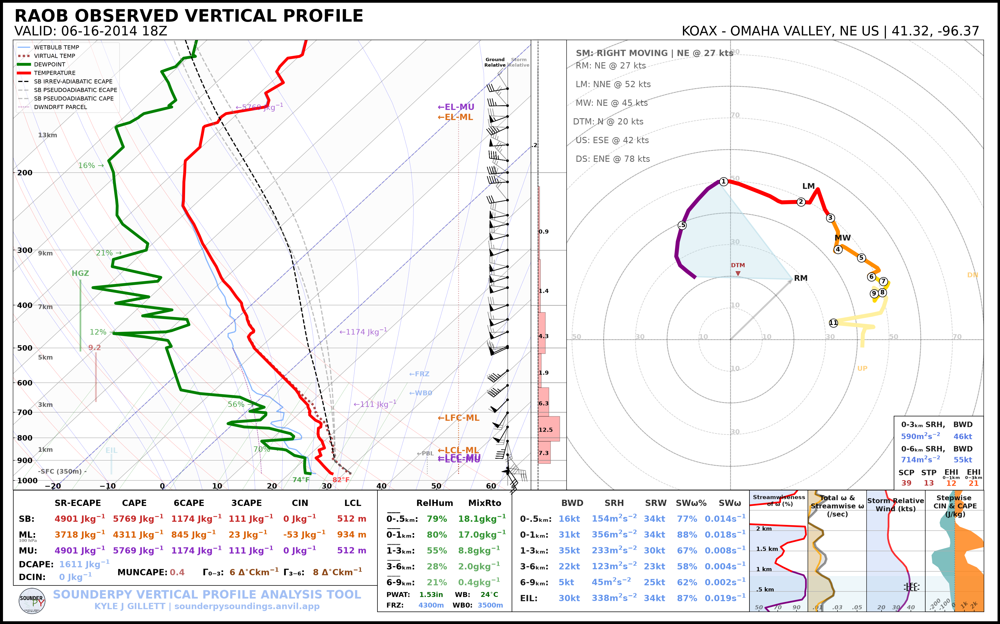

🧪 Parcel Settings
SounderPy sounding plots can display several parcel traces. The
special_parcels argument provides three useful levels of control:
None— standard SounderPy parcel behavior;"simple"— omit the additional most-unstable ECAPE trace while retaining the basic parcel traces;a custom nested list — explicitly select highlighted and background parcel traces.
The custom parcel calculations use parcel definitions supported by the
ecape-parcels integration.
Retrieve the Example Sounding
import sounderpy as spy
data = spy.get_obs_data(
"OAX",
"2014", "06", "16", "18",
hush=True,
)
Default Parcel Behavior
With special_parcels=None, SounderPy uses its normal parcel configuration:
spy.build_sounding(
data,
special_parcels=None,
radar=None,
map_zoom=0,
)

When applicable to the profile, the default behavior includes the standard surface-based, mixed-layer, and most-unstable CAPE parcel traces and the additional most-unstable ECAPE trace.
Simple Parcel Behavior
Use special_parcels="simple" for the simpler parcel configuration:
spy.build_sounding(
data,
special_parcels="simple",
radar=None,
map_zoom=0,
)
{kind=link}

The simple option retains the standard CAPE parcel traces while skipping the additional most-unstable ECAPE parcel calculation/trace.
Custom Parcel Configuration
For full control, provide a nested list containing exactly two lists:
special_parcels = [
["highlighted parcels"],
["background parcels"],
]
The first list contains parcel codes that should be emphasized. The second list contains parcel codes that should be shown as background/reference traces.
For example:
custom_parcels = [
["sb_ia_ecape"],
["sb_ps_ecape", "sb_ps_cape"],
]
spy.build_sounding(
data,
special_parcels=custom_parcels,
radar=None,
map_zoom=0,
)
{kind=link}

Understanding Parcel Codes
Each parcel code contains three components:
PARCELTYPE_ADIABATICSCHEME_CAPETYPE
For example:
sb_ia_ecape
│ │ │
│ │ └── ECAPE
│ └────── irreversible-adiabatic
└───────── surface-based
Parcel Type
sbSurface-based parcel.
mlMixed-layer parcel.
muMost-unstable parcel.
Adiabatic Scheme
psPseudoadiabatic.
iaIrreversible-adiabatic.
CAPE Type
capeTraditional CAPE parcel.
ecapeEntraining CAPE parcel.
Valid Parcel Codes
The currently supported codes are:
mu_ps_cape
mu_ia_cape
mu_ps_ecape
mu_ia_ecape
ml_ps_cape
ml_ia_cape
ml_ps_ecape
ml_ia_ecape
sb_ps_cape
sb_ia_cape
sb_ps_ecape
sb_ia_ecape
Highlight Multiple Parcels
Multiple parcel traces can be emphasized:
custom_parcels = [
[
"sb_ia_ecape",
"ml_ia_ecape",
],
[
"sb_ps_cape",
"ml_ps_cape",
],
]
spy.build_sounding(
data,
special_parcels=custom_parcels,
radar=None,
map_zoom=0,
)
Performance Considerations
Custom ECAPE parcel calculations are more computationally expensive than the
basic CAPE traces. If you only need the common parcel paths for a quick-look
figure, special_parcels="simple" is the lighter-weight option.
For publication or detailed analysis, a custom parcel configuration can make the intended parcel comparison much clearer than plotting every available trace.
Next Steps
Continue to Hodograph Options to customize storm motion and ground-relative/storm-relative wind displays.
See also: